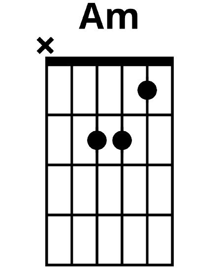
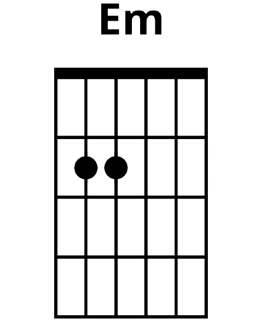
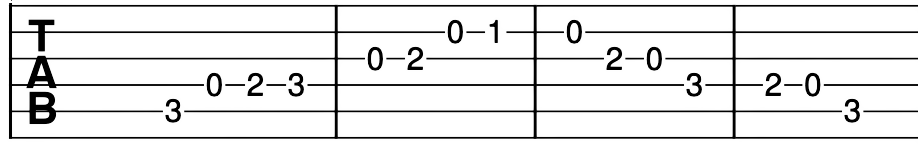

 
What is the difference between a major chord and a minor chord? To the ear, a minor
chord sounds "sadder" than a major chord. If you look at the difference between the notes of a minor chord, the
middle note is slightly lower than the major chord. A major contains the notes A C# E whereas A minor contains the
notes A C E. E major contains the notes E G# B and E minor contains the notes E G B. E minor is usually denoted as
When will I hear minor chords and why? Minor chords are found in many songs. We will
hear some minor chords in the songs linked below. Certain chords are often used in conjunction with each other. When
playing, you will often see Am paired with C or Em paired with G. This is because some notes and chords are in the
same key signature. We will look at transposing and chord progressions later on. For now, you just need to know that
some chords sound "right" when played together.
What songs can I play with five major chords and two minor chords? You can practise Em
in Mine by Taylor Swift here.
You can also play another Taylor Swift song Speak Now which has both Am and Em by
clicking here.
Today we will look at the C major scale.
What notes am I actually playing? You are playing C D E F G A B C while
ascending. Once you hit the high C, you descend backwards through B A G F E D C.
Why does this sound really like the A major scale? While you are playing different
notes, the notes you are playing have the exact same spacing between them. Because the notes are shifted up a bit
in this scale, it means we are in a different key.
How can I train my ear with this scale? Try plucking the strings of a C major chord
individually before and after playing this scale. Can you hear some overlap?
